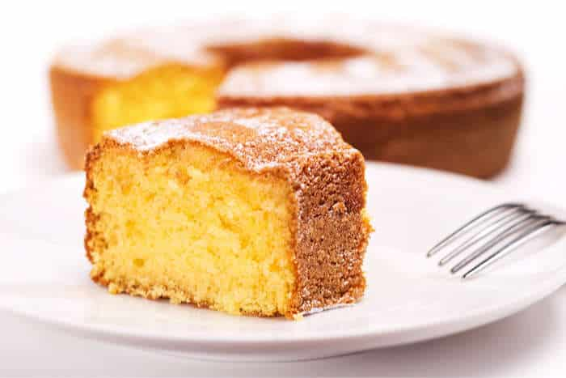

Receta Bizcocho Basico

Descripcion:
Bizcocho tradicional facil de hacer y bueno para acompañar el cafe.
Ingredientes:
- 6 huevos
- 160 gr de azucar
- 160 gr de harina
- Rayadura de un limon
Pasos a seguir:
- Bata los huevos junto con el azucar hasta que tripliquen su tamaño.
Incorpore la ralladura de limon y siga batiendo hasta que
la mezcla tenga consitencia.
-
Añada la harina tamizada a la mezla en tres veces, con movimientos envolvetes.
Cuando la mezcla este omogenea viertala en un molde previamente enarinado.
-
Con el horno previamente calentado a 180 grados, meta el molde y hornee
aproximadamente 55 minutos. Deje reposar 10 minutos una vez sacado del horno y desmolde.